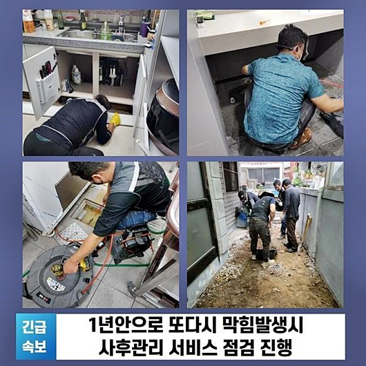
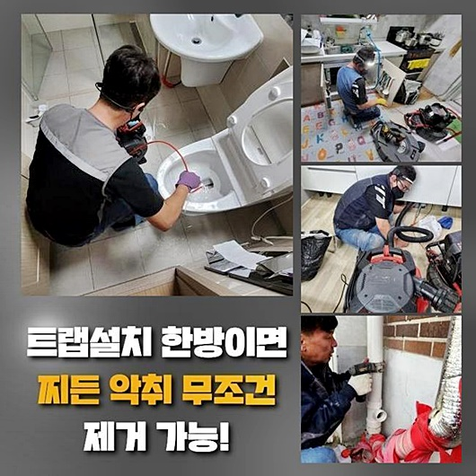
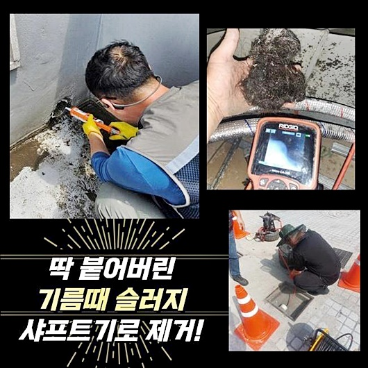
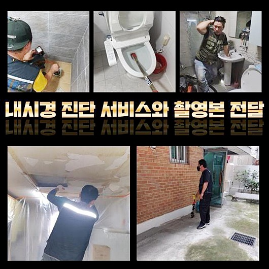
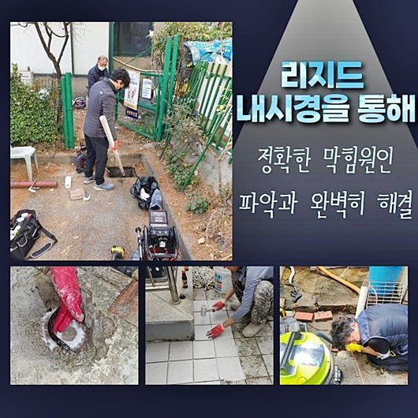
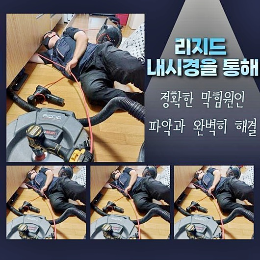
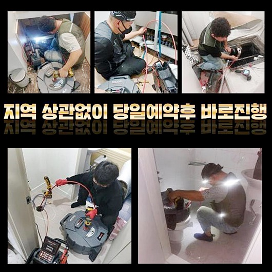

🏠 연수구 연수동오수관역류 송도 하수구뚫는업체 수리업체
용인시 처인구 배관막힘 전문 시공 후기

📋 작업 개요
- 위치: 용인시 처인구, 수원시 영통구, 화성시 동탄
- 서비스 유형: 배관막힘, 누수수리, 내시경점검
- 작업 일시:
- 업체명: 하수구수사대 (010-5615-2118)
🔍 문제 상황
연수구 연수동오수관역류 송도 하수구뚫는업체 수리업체
화장실 방향으로 향하면 오래된 물기에서 나는 구린내가 심하게 가끔 나타나는 것을 직접 눈으로 보면 무슨 일이 벌어지고 있나 노심초사하실 것입니다
확산되는 냄새문제와 함께 일어나는 증세는 물의 폐기 속도가 감소되다 이런 과정들이 길어지면 화장실의 통수 중단으로 사안이 커지게 됩니다
막힘의 동기가 무엇인지는 전용으로 출시된 기기들을 작동시키지 않는다면 판단내리는 건 까다로우니 배관에 대한 프로에게 서비스를 신청해서 회복을 꿈꾸는 것이 바람직하다 하겠습니다
이번에도 화장실 바닥쪽 배수통로가 봉쇄된 일로 전화를 주셔서 직접 가게 된 현장인데 갑작스레 사용한 물들이 천하태평하게 이동하는 양상이었다며 경험을 알려주셨어요
예전엔 욕실을 이용한 다음 잠시 뒤에 안에 가보면 말끔히 처리되어 있길래 당연하게 여기면서 오래 써서 그런가 싶었는데 한참 뒤에 돌아온 시점까지도 전에 고인 물 그대로 고여있는 모습에 충격을 금치못하셨다 해요
곧바로 욕실로 들어가 관측해봤더니 하수가 거꾸로 새어나왔고 적체된 수분의 양이 늘어나서 진입로까지 물기가 고수위로 잠겨버린 현황이 감지되었지요
빨아당기는 석션기로 고인 물을 덜어내 드리면서 초반 정리를 해드리는 과정에서 장비 파이프를 통해 물기와 찌꺼기가 함께 운반됐어요

🔎 원인 분석
💡 전문가 진단: 정밀 진단 장비를 사용하여 슬러지의 고착 여부를 판명하고 타격/세척 작업을 실시했습니다.
그렇지만 가장 문제가 되는 통행 장애의 시발점은 싹 척결된 거 같지는 않아보여서 해당 시설 전용 내시경을 넣어 위치를 감지해 주면서 관 내부를 말끔히 탈바꿈 시켜드리겠다 장담드렸어요
석션기의 특성은 청소기랑은 차원이 다르게 센 흡입 능력을 가졌고 입구에 기다란 호스를 배치하고 남은 공간을 수건이나 스펀지 등으로 막으면 더욱 내측에 위치해 있는 오염 요소들도 철저하게 투출해 줄 수 있답니다
단순 흡입으로는 고인 찌꺼기를 죄다 없애주기에는 디테일한 측면이 약하기에 통로가 꽤나 확보되면 더 깊이로 관찰기기를 넣어서 환경에 대한 스캔을 실시해요
화장실 배수장애를 빚은 것이 어떤 종류이냐에 따라 사용하는 장치들도 상이해 지니 청소를 편하게 하려면 청소할 영역을 지정하는 것이 시급한 문제입니다
선명도가 높은 카메라로써 지면 가까이서 출발하면 옥외로 나가는 파트에 달하기 까지 내부를 돌아볼 수 있게 해주며 미세한 실금과 같은 하자를 발견해 주므로 뚫는 장비를 넣기 전에 속성과 위험도를 파악하기 많은 공헌을 하는 작업입니다
내부를 관찰해 봤더니 바닥부의 인근부에 뿌연 석회 뭉치들이 강하게 결속된 상태였고 더 깊이 내려가보니 마치 진흙같은 점성의 슬러지가 다량 혼재된 상황이었죠
석회물질이 쌩뚱맞게 있는 사유를 추적하자면 건축 단계를 착수하면서 시멘트 가루가 따로 폐기되지 않아서 덩어리화가 되어버리는 경우도 매우 많아요
수돗물에 혼재되어 있는 칼슘 및 마그네슘이 흘러내려간 각종 찌꺼기와 뭉쳐버리게 되면서 불어나는 이물질 크기가 확장되어 가면서 화장실의 막힘 이슈가 유발될 때도 많아요

🔧 작업 과정
입구 근방에 달라붙은 견고한 석회층들은 흔히들 많이 사용하는 석회제거제를 부어서 거품이 일며 녹게 만들고 충분한 반응이 일어나면 미온수를 따라 부음으로써 품이 덜 들어가는 방식으로 정돈을 해주기로 결정했어요
시멘트층이 얼마나 잘 뭉치는 성질인지는 여러 고객님들도 숙지하고 계실텐데 엄청난 회전력을 보여주는 플렉스 샤프트 종류나 스프링청소기라도 무자비하게 긁어내면 배수로에 스크래치가 생겨요
경화된 구조를 말랑말랑하게 소강시킨 다음에 본격 디테일 청소에 들어가면 어렵지 않게 다음 단계를 수행할 수 있답니다
골치아픈 석회를 덜어내 주고 나면 더 깊이 있는 기름때나 각질층 같은 노폐물까지 긴 범주에 속한 대상을 제거하는 스케일링 업무를 수행해요
모든 현장에 사용하는 샤프트기기를 배수로 입구로 들여 보내게 된다면 원형으로 돌아가면서 점액질부터 강하게 밀집되어 있는 집합체까지 자극을 주어 분해합니다
얼마나 큰 직경의 배관이라도 작업이 가능하도록 세밀히 조율된 최첨단 장비에 속하기에 헤드 끝의 사슬이 돌아갈 때도 마음 편하게 시공을 이어갈 수 있으며 기다란 파이프 속까지 도달시킬 수 있는 이점으로 깨끗한 청소가 이뤄져요
플렉스샤프트 장비를 활용해 업무를 이어갈 시에는 옆으로 배관카메라까지 투여하여 실황을 보면서 이물질이 어느 부분에 많이 누적되었나 확인하여 잔여분이 남지 않도록 청소를 해드리고 있어요
욕실 하층의 배관은 흙이나 각종 섬유 조각들이 합쳐지면서 기름기랑 만나 부패된 슬러지를 형성할 수 있으니 하수구 상단에 거름망을 깔아주는 것 역시 간단하며 효과가 좋아요
특히 빠져버린 흙은 기름덩어리와 결착될 시 장비가 튕겨질 정도로 강화가 된 채로 내부 주고물에 접착성을 띠며 군집체의 크기가 확대되가며 공백없이 메워지다가 누수 사안을 야기시키는 상태까지 치닫게 되기도 해요
작업 중간중간 샤프트기를 빼내고 보강작업을 겸하면서 조금씩 갉아내 줬는데 직경이 점차 넓어지는 모습이 모니터에 고스란히 보였네요
빠짐없는 스케일링 업무를 진행하고 나면 배관 내벽이 요철 없이 변하기 때문에 오염원이 흘러가도 대체로 미끄러지는 경향이 있어 배수되어 버리므로쪽의 배수 문제가 있다면 전용 장비와 기술력을 바탕으로 더는 안쌓이게 만들 수 있죠
작은 크기로 나뉘어진 습식청소기를 재가동하여 싹 소거를 해주는데 석션작업으로 인해 내부가 뻑뻑하면 수돗물을 붓는 과정을 거치면서 작은 찌꺼기 하나라도 남지않게 작업을 진행했습니다
플렉스 샤프트와 석션기는 배관을 다룰 때에 마치 환상의 콤비같은 세트인데 하나는 절단내고 반대는 이를 수습해 주죠


✅ 작업 완료
스케일링을 모두 마친 후 내시경카메라로 재테스트를 진행했고 석화된 이물질이 소거된 게 확실한지 봐주고 물의 유속을 테스트해봐요
많은 수량을 흘려보내서 원래 있었던 막힘이 부재하는 점을 체크 후 마무리 절차를 밟았고 화장실 사용시 명심해야 하는 사항도 함께 전수를 해드렸어요
석화된 물질로 인해 안이 가득찬 배수관은 여러 개의 툴을 병행해도 변화가 없는데 방문 당일 물길을 상쾌하게 열어드리는 노하우가 출중한 숙련가가 필요하시면 의심하지 마시고 연락해주세요
이밖의 의문점들이 남아서 혼란스러우시다면 언제든 물어보시면 친절히 답변드릴테니 부담갖지 마시고 연락해주세요




⚠️ 하수구 배관 막힘 예방 및 관리 가이드
- ✅ 머리카락, 비닐, 물티슈 등 물에 분해되지 않는 이물질은 절대 흘려보내지 마세요.
- ✅ 기름기 많은 식기는 설거지 전 키친타올로 먼저 기름때를 닦아내세요.
- ✅ 주기적으로 배수구에 뜨거운 물을 가득 부어주어 유지방 고착을 방지하세요.
- ✅ 작업 후 1년 이내 재발 시 무상 A/S 보증 서비스를 제공합니다.
💡 핵심 정리
- 확실한 장비 작업(내시경 점검 및 샤프트 스케일링)으로 원인을 뿌리 뽑습니다.
- 작업 후 1년 이내에 동일한 부위 재발 시 100% 무상 A/S 서비스를 보장합니다.
- 서울 · 경기 · 인천 전 지역에 24시간 언제든 긴급 출동할 수 있도록 항시 대기 중입니다.
❓ 자주 묻는 질문 (FAQ)
🚨 용인시 처인구 배관막힘 문제로 고민이신가요?
정확한 원인 진단과 확실한 시공으로 재발 없는 해결을 약속드립니다.
24시간 긴급 출동 | 서울 · 경기 · 인천 전지역 | 1년 내 재발 시 무상 A/S